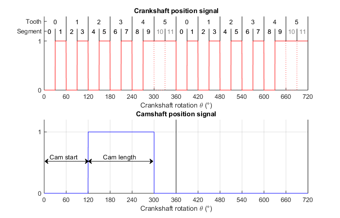
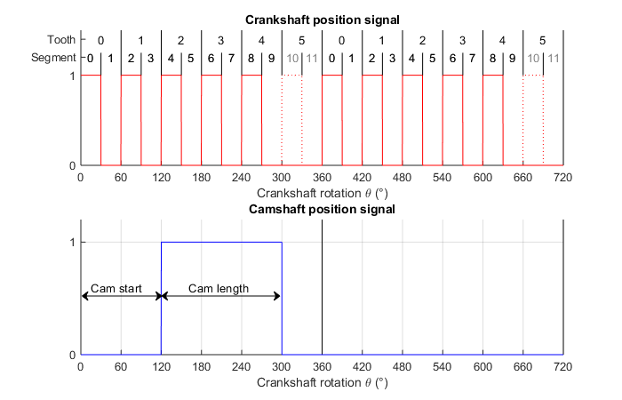
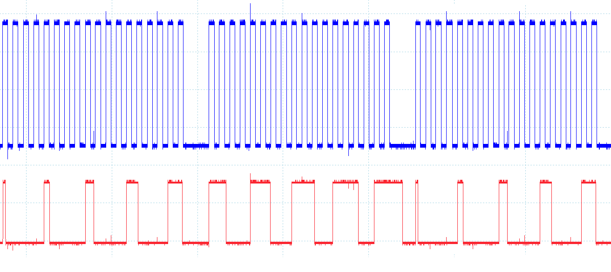
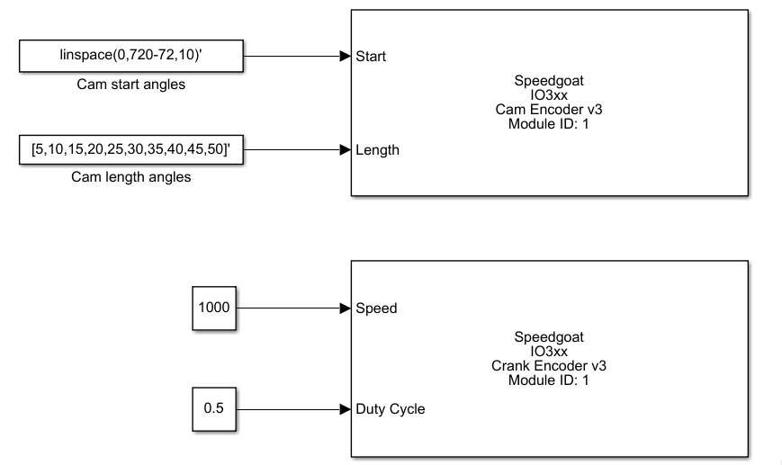

Cam and Crank Usage Notes — Usage information about the I/O module
Important: Crankshaft teeth per revolution includes all teeth, also the missing tooth/teeth.
Assuming a crank and a camshaft with the following parameters:
Crankshaft
Crankshaft teeth per revolution (incl. missing): 6
Missing crankshaft tooth/teeth per revolution: 1
Duty Cycle: 50%
Camshaft (only one tooth configured)
Cam tooth start: 120°
Cam tooth length: 180°
Depending on the parameter missing tooth signal you get an output signal where the even segments are high (and the missing tooth low) or the odd segments are high (and the missing tooth are also high). The segment size theta is 180° divided by crankshaft teeth per revolution, therefore 30° in this case. This is only true for a duty cycle of 50%. For other duty cycles, the segment sizes of high and low segments differ accordingly. Usually various camshafts are connected to one master crankshaft.



The oscilloscope figure shows the output of a crank encoder (blue) configured with 18 teeth and two missing teeth. The second channel (red) is the output of a cam encoder with a cam tooth start every 72° and an increasing cam tooth length from 5°-50°. The corresponding Simulink model is shown below.
